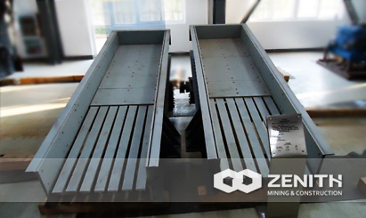
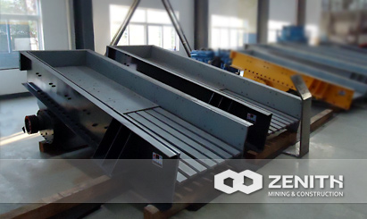
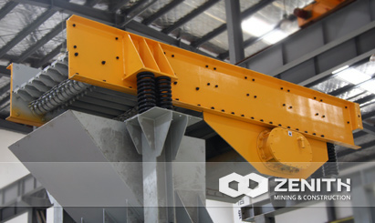
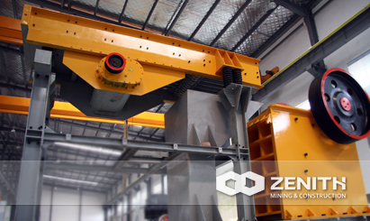

- 
- 
- 
- 
GZD Vibrating Feeder
GZD Vibrating Feeder is a kind of linear direction feeding equipment. It features smooth vibrating, reliable operation, long service life and being suitable for feeding.
When processing stones and mines, the quarry feeding machine plays a very important role, and the common type of feeding machine is the vibrating feeder, which is a kind of feeding equipment with linear direction. In the production line, the vibrating feeder is used to put materials into the crusher continuously and uniformly as well as screen the materials.
Widely Application of GZD Vibrating Feeder
GZD Vibrating Feeder can be used in a wide application, such as the metallurgical industry, coal mining industry, mining-selecting, building, chemical and grinding industry, etc. As for the feeding materials, Zenith's vibrating feeder can put thousands of materials, such as the quartz, calcite, talcum, barite, fluorite, rare earth, bauxite, iron ore, copper ore, phosphate rock, zircon sand, slag, cement clinker, activated carbon, dolomite, granite,chemical fertilizer, and compound fertilizer, etc.
Working Principle of Vibrating Feeder
Typically, the vibrating feeder consists of the vibrating frame, spring, vibrator, motor vibrating device and motor. It has two fixed eccentric shafts whose gears are jogged. When installation, the two gears must be jogged according to the sign. Through drive of the motor, the two eccentric shafts start rotating to produce a linear huge power which forces the feeder to vibrate. Through the vibration, materials will slip and sling on the funnel, moving forward, when the materials pass the screening part, smaller parts will fall down, and avoiding the further crushing, so screening can be finished.
GZD Vibrating Feeder Benefits and advantages
- Flexible design.
- Extra heavy-duty construction.
- Exclusive vibrator technology.
- Reliable performance, no flushing phenomenon of materials.
- Easy maintenance and low operation cost.
- Easy to change and control currency through adjusting excitation force.
- Sealing structure body is employed, no pollution.
The tacnology data
| Model | Trough Size(mm) | Max Feeding (mm) | Capacity (t/h) | REV (r/min) | Power (kw) | Motor Model | Machine Size(mm) |
|---|---|---|---|---|---|---|---|
| GZD 800x1800 | 1800×800 | 300 | 30-80 | 970 | 6-1.5×2 | 2200×1100×800 | |
| GZD 1200x2000 | 2000×1200 | 300 | 80-500 | 970 | 6-2.2×2 | 2000×1200×855 | |
| GZD 850x3000 | 3000×900 | 300 | 40-100 | 970 | 6-2.2×2 | 3050×1430×1550 | |
| GZD 960x3800 | 3800×960 | 500 | 90-200 | 710 | 6-11 | Y160L-6/11 | 3880×2240×1880 |
| GZD 1100x4200 | 4200×1100 | 580 | 150-350 | 710 | 6-15 | Y180L-6/15 | 4300×2450×2010 |
| GZD 1100x4900 | 4900×1100 | 580 | 180-380 | 780 | 6-15 | Y180L-6/15 | 4980×2450×2010 |
| GZD 1300x4900 | 4900×1300 | 750 | 250-450 | 780 | 6-22 | Y200L2-6/22 | 4980×2710×2050 |
| GZD 1500x6000 | 6000×1500 | 800 | 600-1000 | 780 | 6-30 | Y255M-6/30 | 6160×2919×2293 |